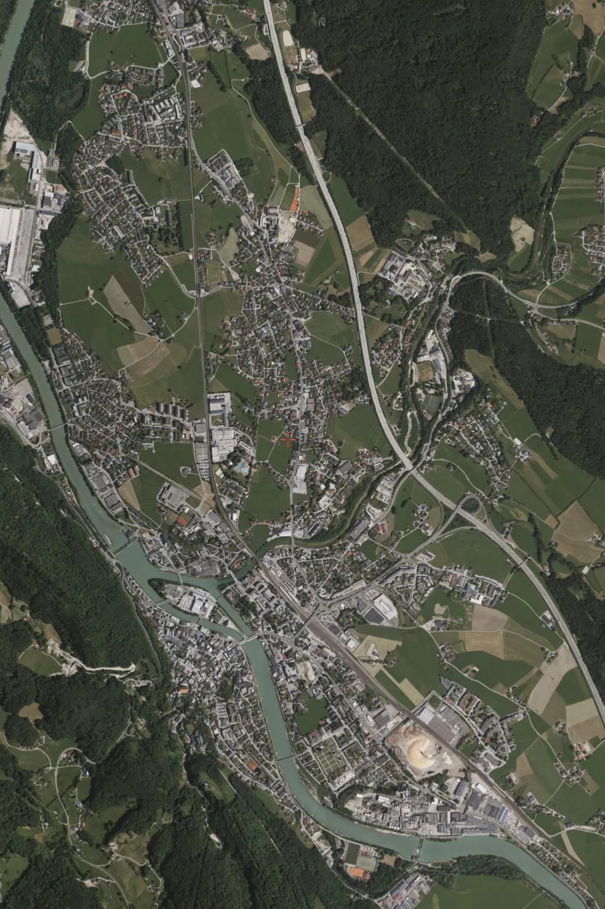

Earlier work at the University of Salzburg (2018 to 2022; this project Feb to Jul 2022). Unpublished; no results are quoted on this page.
The task
A sealed surface is ground that rain cannot penetrate: asphalt, concrete, roofing. The proportion of sealed surface in a given area is a direct input to urbanisation tracking, storm-water and flood-risk planning, urban heat-island assessment, and land-use policy. Measuring it by survey is slow and expensive; measuring it from satellite imagery is a segmentation problem.
Why it is harder than it sounds
- Class confusion. Bare rock, dry soil and gravel share the spectral signature of concrete. Spectral thresholds alone do not separate them.
- Resolution. At typical satellite ground sample distances a single pixel straddles road, verge and roof, so the label is genuinely mixed rather than merely uncertain.
- Seasonal drift. Vegetation cover changes what is visible between acquisitions, so a model trained on one season degrades on another.
- Label scarcity. Ground-truth sealing maps are expensive, so labelled area is small relative to the area to be predicted.
The input
Four bands, not three: RGB plus near-infrared. The NIR band is what makes the task tractable: healthy vegetation reflects strongly in the near-infrared and sealed surfaces do not, so the separation that is ambiguous in visible light becomes visible once the fourth band is in the stack. Bare rock and dry soil are the residual hard cases, since they are dark in NIR too.

Approach
Classical and deep segmentation pipelines evaluated side by side, with the classical baseline kept in place as a check on whether the learned model is earning its complexity on this data rather than memorising a season. Implemented in Python and Jupyter.
The implementation lives in a private repository. Happy to walk through it on request.